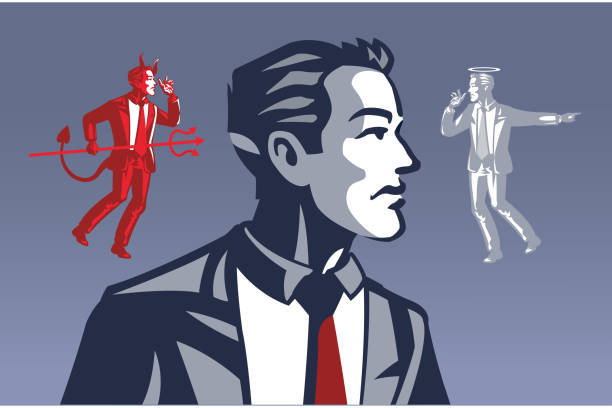
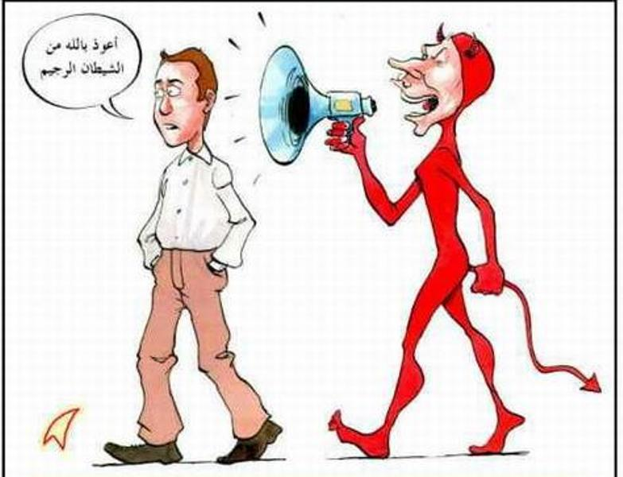

| Problem | Solution |
|---|---|
| Laziness | You can defeat laziness by making prayer a priority. For example, make it the first thing you do when you get home. Don’t rest — do wuduu and pray right away. |
| Whisper (waswas)  | From the beginning of creation, Iblis (Satan) refused to obey Allah. So when you refuse to pray, think — are you following his path? You can overcome him by simply being determined and consistent.  |
| Example of people who changed their life | |
Click here to go to the main page → 🏠
See examples of people Islam changed → Second Page